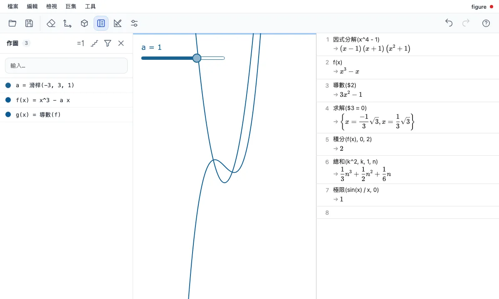

符號運算
DocGeo 藉助 Xcas 和 GeoGebra 的符號運算引擎 Giac 計算精確值：導數、原函數、因式分解、方程式、極限、求和，既可用於圖形的公式，也可用於 CAS 檢視。它還能求出軌跡的方程式，並證明幾何性質。

Giac 在計算第一次需要它時才載入，不需要它的圖形永遠不會載入。最近的結果儲存在圖形中：圖形開啟和顯示時無需等待 Giac，離線也可以。如果無法載入 Giac，左下角會顯示「⚠ Giac」：已知的結果繼續顯示，其餘的結果未定義。
符號運算指令
它們可以像函數一樣用於任何公式。公式僅由其中一個指令構成的運算式顯示 Giac 的結果，而不是其公式。
| 指令 | 結果 |
|---|---|
導數(f), 導數(e, v),
導數(e, v, n)
|
導數，對 v 的 n 階導數 |
積分(e), 積分(e, v)
|
原函數 |
積分(x^2, 0, a),
積分(e, v, a, b)
|
從 a 到 b 的積分，精確值 |
因式分解(e) |
在有理數範圍內因式分解：x^2 - 2
保持不變
|
實數域因式分解(e) |
在根式範圍內因式分解：(x − √2)(x + √2) |
展開(e), 化簡(e) |
展開式，化簡式 |
求解(x^2 = 2),
求解(e, v)
|
方程式或等於零的運算式的實數解，依序排列 |
複數求解(e) |
複數解 |
總和(e, k, a, b) |
k 為從 a 到 b 的整數時 e 的和 |
極限(e, a),
極限(e, v, a)
|
在 a 處的極限，a 可以是 ∞ |
泰勒多項式(e, a, n),
泰勒多項式(e, v, a, n)
|
在 a 處 n 階泰勒多項式 |
變數 v 為 x、y、z 或
t，預設為運算式讀到的第一個。圖形中的函數用其名稱書寫：g(x) = 導數(f)。
-
滑桿對 Giac 而言始終是符號：即使 a 等於 4，
因式分解(x^2 - a)也顯示 x² − a。因此移動滑桿不會向 Giac 要求任何計算：運動過程中只是重新求值。 -
例外：泰勒多項式的階 n，以及沒有簡單形式的和的上下限（
總和(1/k, k, 1, n)），按其數值讀取：滑桿的每個整數值對應一個結果。 -
積分(f, a, b)（f 為函數名稱）仍是繪製面積的指令；積分(x^2, 0, 1)或積分(e, v, a, b)計算精確值。 - 在結果到達之前，物件保留其最後的值。DocGeo 無法讀取的結果使物件未定義。等待 Giac 時，導數由 DocGeo 自行計算。
CAS 檢視
與 GeoGebra 的相同：帶編號的計算列，位於圖形旁邊或其自己的分頁中。
| 操作 | 方法 |
|---|---|
| 新增檢視 | 檔案 › 檢視 › 新增 CAS 檢視 （每個圖形一個），或 檔案 › 新增 CAS 分頁 （「CAS1」、「CAS2」…） |
| 計算一列 | 在最後一個空列中輸入，然後按 Enter：顯示結果，並出現新的一列 |
| 修改一列 | 點選該列，然後按 Enter；Esc 恢復之前的文字，↑ 和 ↓ 在列之間移動 |
| 刪除一列 | 清空該列，然後按 Enter：後面的編號隨之前移 |
| 刪除檢視 | 檔案 › 檢視 › 刪除 CAS 檢視 |
每次修改都可以用復原復原。無法理解的列會被拒絕，顯示為紅色。
書寫一列
-
一列就是一個公式，可以有指令也可以沒有：
sqrt(12) - sqrt(3)得到 √3，因式分解(x^4 - 1)得到其因式分解。 -
$2是第 2 列的結果。刪除一列時，$n會重新編號，對已刪除列的參照會被替換為其公式。 -
b := 3和h(x) := x^2 + 1為後續各列定義一個數或一個函數。 -
圖形的物件按其目前的值讀取：a = 2 時，
a^2得到 4。移動這些物件時，讀取它們的列會重新計算。不是物件的字母是自由變數：b^2仍為 b²。 -
pi和ln的寫法與 GeoGebra 相同，∞也可寫作inf。角度始終以弧度計，即使在以度為單位的圖形中也是如此。 -
近似數(e)、近似數(e, n)給出近似值（n 位數字）；保留原式(e)原樣顯示 e，不作計算。引號中的一列，"精確計算"，是普通文字。 -
?代替 Giac 沒有給出或 DocGeo 無法讀取的結果。
用滑鼠指定
在輸入已開始的一列時，點選圖形中的物件會寫入其名稱；點選另一列會寫入其
$n。在空列上，圖形照常回應。
定義圖形的物件
只讀取圖形物件的定義也會建立該物件，並在構造中產生其列：m(x) := x^2 + a
繪製函數 m。讀取自由變數、$n
或僅在檢視中定義的名稱的定義（n := b^2）只屬於該檢視。
在播放器中，各列以瀏覽器的語言顯示。
代數曲線
在構造中輸入的任意次數或非多項式的方程式是一條曲線：f = x^3 + y^3 = 3x y（笛卡兒葉形線），c = sin(x) = y。它在穿過視窗的地方繪製，並在移動視窗時跟隨視窗；可以在其上放置點，並與其他物件求交。
| 指令 | 結果 |
|---|---|
軌跡方程(M, P) |
當物件上的點 P 在其物件上移動時，點 M 描出的整條曲線 |
包絡(d, P) |
當 P 在其物件上移動時，與直線 d 的各個位置相切的整條曲線 |
與 GeoGebra
一樣，這是整個方程式及其所有分支，而不僅是經過的部分：沿線段移動的點的
軌跡方程 給出整條直線。等待 Giac
時，或對於它無法轉換的構造（巨集、角平分線、內切圓、以滑桿為驅動、空間），顯示的是
軌跡 經過的軌跡。
證明
六個述詞（每個參數都是物件的名稱）判斷某個性質在目前圖形中是否成立：true
或 false。
| 述詞 | 為真，當 |
|---|---|
是否共線(A, B, C) |
三點共線 |
是否平行(d, e),
是否垂直(d, e)
|
直線、線段或射線平行、垂直 |
是否共圓(A, B, C, D) |
四點在同一個圓（或同一條直線）上 |
是否共點(d, e, f) |
三條直線經過同一點（或互相平行） |
是否相等(a, b) |
兩個點、兩條直線或兩個圓重合；兩條線段長度相等；兩個數相等 |
證明(p)（p
為這些述詞之一）判斷它是否一般地成立：對於自由點和物件上的點的所有位置，退化情形除外。設
G = 重心(A, B, C)，把 C 放到 (AB) 上時
是否共線(A, B, G) 變為真，但
證明(是否共線(A, B, G)) 仍為假。Giac 像 GeoGebra
一樣把構造轉換為方程式：結果最多幾秒鐘就會得到，並儲存在圖形中。
-
計算同時涵蓋所有交點：要討論經過點 A
的直線與圓的第二個交點，請用
另一交點(c, d, A)構造它。 -
對於無法轉換的構造（軌跡方程
無法轉換的那些，或不是簡單分數的角度、比或半徑，例如 60°
的旋轉），以及在 CAS 檢視中，
證明保持未定義。 -
參數是名稱：請先構造並命名直線，
證明(是否平行(d, e))。
GeoGebra 圖形
匯入時會保留公式中的符號運算指令、GeoGebra 的 CAS
檢視中的列、其計算機套件（Suite）中的列、LocusEquation、Envelope、Prove
以及各述詞。使用 DocGeo 沒有的指令的儲存格會被回報。